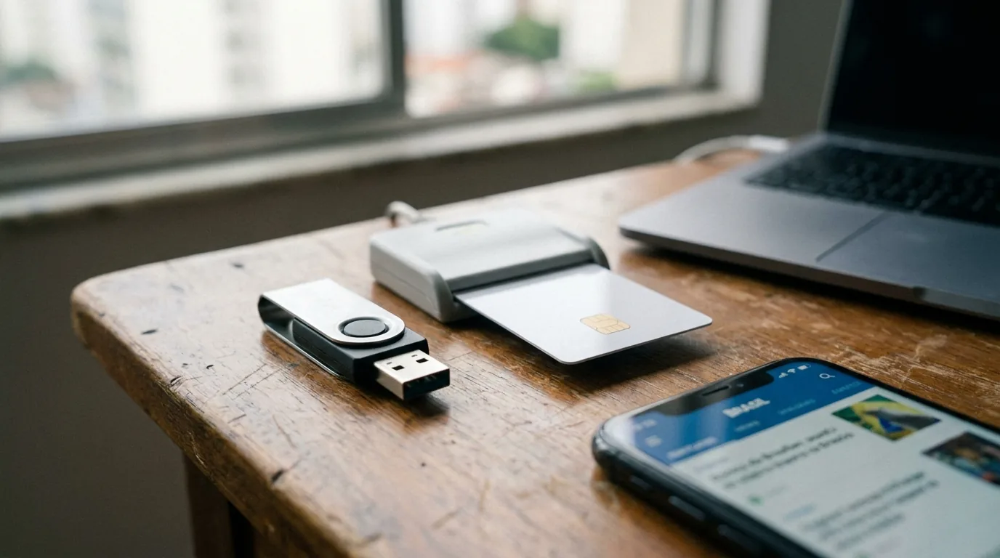
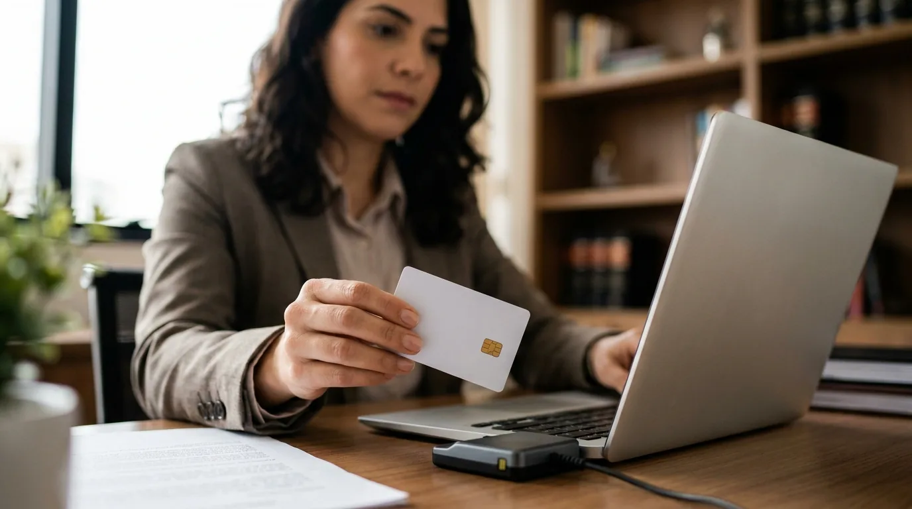

Certificado Digital para Advogado: Tipos e Como Emitir
Quem acabou de receber a carteira da Ordem descobre rápido que a inscrição não basta para trabalhar. Na primeira petição, o sistema do tribunal pede uma coisa que não veio junto com o compromisso: o certificado digital. Sem ele, o advogado não assina nem protocola na maior parte dos sistemas, e a advocacia contenciosa fica parada na porta.
O advogado experiente conhece outra versão do susto: o certificado digital vence numa sexta-feira à noite, com prazo correndo, e a renovação depende de uma validação que só abre na segunda. Nos dois casos, o erro foi tratar como detalhe a ferramenta que virou a chave do escritório.
Este guia explica por que o certificado digital é obrigatório, a diferença entre A1 e A3, o certificado da OAB, a emissão, o custo e a segurança.
Por que o advogado precisa de certificado digital
A Lei 11.419/2006 admite o meio eletrônico na tramitação de processos, na comunicação de atos e na transmissão de peças (art. 1º). A regra vale para os processos civil, penal e trabalhista e para os juizados especiais, em qualquer grau de jurisdição (art. 1º, § 1º).
O art. 1º, § 2º, III, aceita duas formas de assinatura eletrônica: a assinatura digital baseada em certificado digital emitido por Autoridade Certificadora credenciada e o cadastro de usuário no Poder Judiciário. Já o art. 2º exige credenciamento prévio no Judiciário para enviar petições e recursos por meio eletrônico.
A Resolução CNJ nº 185/2013, que institui o PJe, até permite entrar no sistema com login e senha, mas exige a assinatura digital para assinar documentos e para consultar processos sob sigilo (art. 6º, § 4º). O mesmo texto define assinatura digital como a feita com par de chaves certificado dentro da ICP-Brasil, a infraestrutura oficial que credencia as certificadoras no país (art. 3º, I).
PJe, eproc, e-SAJ e os outros sistemas
O PJe domina a Justiça do Trabalho e parte da Justiça Federal. O eproc aparece nos tribunais federais e estaduais que o adotaram, e o e-SAJ roda em cortes estaduais, como a de São Paulo. Essa colcha de sistemas é um retrato da tecnologia no Direito brasileiro, que avançou rápido, mas sem padrão único.
Alguns sistemas, inclusive o PJe em funções de consulta, aceitam login e senha, e o eproc permite peticionar com usuário cadastrado. Mesmo assim, o certificado é o denominador comum. Com ele, o advogado assina a peça, se cadastra na maioria dos sistemas e consulta processos sob sigilo quando o tribunal exige certificado para liberar o acesso.
E o horário conta a seu favor. Pela Lei 11.419/2006, a petição eletrônica enviada para cumprir prazo é tempestiva se transmitida até as 24 horas do último dia (art. 3º, parágrafo único, e art. 10, § 1º), pelo horário do local do juízo (art. 213, parágrafo único, do CPC).
Na prática: antes de atuar num tribunal novo, abra o portal dele e leia a página de cadastro do advogado. Alguns sistemas pedem assinador próprio (o programa que aplica o certificado ao arquivo) ou extensão no navegador, e a véspera do prazo é o pior momento para descobrir isso.
O certificado digital também serve fora do processo
O Código de Processo Civil prevê, no art. 105, § 1º, que a procuração pode ser assinada digitalmente, na forma da lei. O mesmo certificado digital assina contratos de honorários, pareceres e documentos enviados à Receita Federal, às juntas comerciais e a outros órgãos públicos.
Quem atende a distância depende do certificado digital em cada etapa, da procuração ao protocolo. O caminho para montar essa operação está no nosso guia de advocacia online.
ICP-Brasil: o que garante a validade da assinatura
A ICP-Brasil (Infraestrutura de Chaves Públicas Brasileira) foi criada pela Medida Provisória nº 2.200-2/2001. Segundo o art. 1º, ela existe para garantir a autenticidade, a integridade e a validade jurídica de documentos eletrônicos.
É uma cadeia de confiança (art. 2º). No topo fica a Autoridade Certificadora Raiz, papel do ITI (Instituto Nacional de Tecnologia da Informação), conforme o art. 13. Abaixo vêm as Autoridades Certificadoras (AC), que emitem o certificado digital, e as Autoridades de Registro (AR), que identificam o titular e encaminham o pedido.
A MP vale como lei até hoje porque é anterior à Emenda Constitucional 32/2001, que manteve em vigor, sem prazo, as medidas provisórias editadas até ali. O efeito prático está no art. 10, § 1º: as declarações de documento eletrônico assinado com certificado ICP-Brasil presumem-se verdadeiras em relação aos signatários. Por isso, a peça assinada no computador vale como a assinada à caneta.
Por dentro, o certificado digital liga uma pessoa a um par de chaves criptográficas. A chave privada assina, e a chave pública permite a qualquer um conferir a assinatura. Pelo art. 6º, parágrafo único, da MP, o próprio titular gera o par de chaves, e a chave privada fica sob seu controle exclusivo. Se alguém mudar uma vírgula depois, a conferência acusa. Assim, a assinatura prova quem assinou e que o documento não foi alterado.
Assinatura gov.br ou certificado ICP-Brasil?
A assinatura gratuita do gov.br substitui o certificado digital? No processo judicial, não. A Lei 14.063/2020 classifica as assinaturas eletrônicas em simples, avançada e qualificada (art. 4º). A simples identifica quem assinou; a avançada liga a assinatura à pessoa com mais segurança; a qualificada usa certificado ICP-Brasil e tem o nível mais alto de confiabilidade (art. 4º, III e § 1º). A assinatura do gov.br é classificada como avançada pelo Decreto 10.543/2020.
O detalhe decisivo está no art. 2º, parágrafo único, I, da lei: as regras sobre interação com entes públicos não se aplicam aos processos judiciais. Para peticionar, valem a Lei 11.419/2006 e as resoluções de cada tribunal. O gov.br resolve requerimentos administrativos, mas não ocupa o lugar do certificado digital no PJe.
A1 e A3: qual certificado digital escolher
A diferença entre os dois tipos de certificado digital está no lugar onde a chave privada fica guardada, e isso muda a segurança, a mobilidade e a validade.
O certificado digital A1 é um arquivo instalado no computador ou no celular. Dispensa leitora e assina bem em lote, mas fica exposto a qualquer ameaça daquela máquina, e a validade é curta.
O A3 guarda a chave numa mídia criptográfica: token USB, cartão com chip lido por leitora ou servidor em nuvem com hardware de segurança (HSM). A chave não sai da mídia, o que dificulta muito a cópia. Em troca, o advogado precisa ter a mídia à mão.
| Característica | Certificado A1 | Certificado A3 |
|---|---|---|
| Onde fica a chave | Arquivo no computador ou celular | Token USB, cartão com chip ou nuvem (HSM) |
| Validade usual | Até 1 ano | De 1 a 5 anos, conforme o produto |
| Mobilidade | Presa ao aparelho em que foi instalada | Vai com o advogado; a versão em nuvem dispensa hardware |
| Segurança | Menor, porque o arquivo pode ser copiado | Maior, porque a chave não sai da mídia |
| Aceitação no PJe | Aceito desde a Resolução CNJ 281/2019 | Aceito |
| Futuro do padrão | Em extinção, com emissão até 2029 | Passa a ser o padrão para pessoa física |
A redação original da Resolução CNJ 185/2013 só admitia A3 no PJe. A Resolução CNJ 281/2019 mudou o art. 4º, § 3º, e passou a aceitar A1 e A3, desde que emitidos conforme as normas da ICP-Brasil. Mesmo assim, confira o sistema de cada tribunal antes de comprar, porque as regras locais variam.
O padrão também está mudando. A Resolução CG ICP-Brasil nº 211/2024 extinguiu o certificado A1 de assinatura: os modelos atuais podem ser emitidos e usados na cadeia vigente até 2 de março de 2029, e depois disso o A3 passa a ser o padrão para pessoa física. Quem compra A1 hoje deve contar com essa data na renovação.
E o certificado digital em nuvem?
O A3 em nuvem atende quem trabalha no celular ou em mais de um computador: a chave fica num servidor, e a assinatura é liberada por aplicativo, senha ou biometria. Ele resolve o token esquecido em casa, mas depende de internet e de o sistema do tribunal aceitar o assinador.

Com a assinatura resolvida, o escritório atende clientes de qualquer cidade. Para que eles encontrem a sua banca, a JuriDigital cuida do marketing jurídico dentro das regras da OAB.
Certificado digital OAB: carteira com chip e alternativas de mercado
A Ordem tem Autoridade Certificadora própria, a AC OAB, credenciada na ICP-Brasil. Em 2007, a OAB lançou a carteira de identidade com chip, feita para receber o certificado e permitir a assinatura digital nos atos processuais. Segundo a entidade, a carteira não tem prazo de validade, mas o certificado precisa ser renovado periodicamente.
Na prática, o certificado digital OAB é um e-CPF (certificado de pessoa física, vinculado ao CPF do titular) do tipo A3 que traz o número de inscrição do advogado. Ele pode ser gravado no chip da carteira, se o chip for compatível com o padrão atual da ICP-Brasil, ou num token ou cartão avulso. As seccionais costumam divulgar os pontos de emissão e os convênios com certificadoras parceiras.
O token OAB é obrigatório?
Não. O token OAB é só uma das mídias do certificado da AC OAB. Nenhum tribunal exige que o certificado digital venha da Ordem: basta que seja ICP-Brasil e compatível com o sistema. Por isso, muitos advogados usam um e-CPF comum, comprado de certificadora de mercado, sem prejuízo processual.
Para a assinatura digital OAB funcionar no dia a dia, o que importa é a compatibilidade com os sistemas em que você atua, mais do que a marca da emissora.
| Opção | Onde fica | Vantagem | Ponto de atenção |
|---|---|---|---|
| Certificado AC OAB na carteira | Chip da carteira profissional | Um só documento para identidade e assinatura | Exige leitora de cartão e chip compatível |
| Certificado AC OAB em token | Token USB | Não depende da carteira | Mais um objeto para guardar e não perder |
| e-CPF A3 de certificadora de mercado | Token, cartão ou nuvem | Mais opções de mídia e de agenda | Confira se a emissora dá suporte a advogados |
| e-CPF A1 de certificadora de mercado | Arquivo no computador | Prático e sem hardware | Validade curta, mais exposição a vírus e tipo em extinção |
Atenção: o e-CNPJ (certificado da pessoa jurídica) da sociedade de advogados não substitui o e-CPF do advogado no peticionamento. Os atos privativos da advocacia são praticados individualmente pelo advogado (art. 37, § 1º, do Regulamento Geral), e a procuração é outorgada a ele, não à sociedade (art. 15, § 3º, do Estatuto). Por isso o sistema identifica quem peticiona pelo CPF do certificado.
Quem está no começo da carreira conclui a inscrição, recebe a carteira e só então emite o certificado. As etapas dessa primeira fase estão no nosso guia de inscrição na OAB.

Como emitir e proteger o certificado digital
A etapa que ninguém pula é a validação da identidade. Pelo art. 7º da MP 2.200-2/2001, cabe à Autoridade de Registro identificar e cadastrar o usuário. O parágrafo único desse artigo, que nasceu na MP 951/2020 e foi mantido pela Lei 14.063/2020, admite a identificação presencial ou por outra forma que garanta nível de segurança equivalente. Essa regra abriu caminho para a emissão por videoconferência, hoje oferecida por muitas certificadoras.
O roteiro costuma seguir esta ordem:
- Escolha o tipo e a mídia. Defina entre A1 e A3 e, no A3, entre token, cartão, carteira da OAB ou nuvem.
- Compre pela certificadora ou pelo convênio da seccional. O pedido gera um protocolo, usado na validação.
- Agende a validação. Ela pode ser presencial ou por videoconferência, que exige câmera, boa conexão e documento original em mãos.
- Separe os documentos. Em geral, pedem documento oficial com foto, CPF e comprovante de endereço, e a carteira da OAB costuma servir como identidade.
- Faça a validação. O agente confere os documentos e a sua identidade e, em muitos casos, coleta biometria.
- Instale e teste. Coloque na máquina o driver do token ou da leitora, o assinador e o certificado. Depois, faça um teste no sistema do tribunal antes do primeiro prazo.
Para a emissão por vídeo, algumas certificadoras pedem biometria já cadastrada em base oficial.
Se o escritório usa um software jurídico para gerir prazos e peças, veja também se ele integra com o assinador. Muitos sistemas assinam e protocolam direto da plataforma, desde que o certificado esteja instalado na máquina.
Quanto custa um certificado digital
O preço varia com o tipo, a validade e a mídia. Via de regra, o A1 sai mais barato que o A3, cujo preço sobe quando o token ou o cartão vem no pacote. Quem já tem token ou carteira com chip compatível pode comprar só o certificado e pagar menos.
As seccionais da OAB costumam ter convênios com desconto para advogados adimplentes, então consulte o site da sua antes de comprar direto. Na conta, inclua a leitora de cartão e o custo de cada renovação.
Dica: anote o vencimento na agenda do escritório com 30 dias de antecedência. Renovar um certificado ainda válido costuma ser mais simples do que emitir outro do zero, e o susto da sexta-feira à noite some.
Segurança e responsabilidade do titular
Juridicamente, o certificado digital é a sua assinatura. Pela Resolução CNJ 185/2013 (art. 4º, § 2º), o usuário responde pela guarda, pelo sigilo e pela utilização da assinatura digital. O mesmo dispositivo afasta, em qualquer hipótese, a alegação de uso indevido, nos termos da MP 2.200-2/2001.
A petição protocolada com o seu certificado é sua, mesmo que outra pessoa tenha clicado. Emprestar o token ao estagiário "só para protocolar" entrega a caneta e mantém a responsabilidade com você.
Os cuidados que mais protegem:
- use só o próprio certificado, nunca o de outro advogado;
- guarde o PIN (a senha numérica do token) na memória, nunca em planilha, e-mail ou grupo de mensagens;
- retire o token depois de assinar, porque mídia conectada o dia inteiro facilita acesso indevido;
- mantenha o computador que assina com sistema atualizado, antivírus ativo e nenhum programa de origem duvidosa;
- se o token sumir ou o computador com A1 for roubado, peça a revogação à certificadora na hora.
A revogação tem respaldo legal. Pela MP 2.200-2/2001, art. 6º, cabe à certificadora revogar o certificado e mantê-lo na lista de revogados, e a Lei 14.063/2020 (art. 4º, § 2º) também exige meios de revogação em caso de vazamento. Revogado, o certificado deixa de valer.
Os dados de cliente pedem outras camadas, como backup e controle de acesso, temas do nosso guia de cibersegurança para escritórios.
Com a assinatura resolvida, o próximo gargalo costuma ser a chegada de clientes. Se quiser entender como estruturar isso na sua banca, fale com um especialista da JuriDigital.
Perguntas frequentes sobre certificado digital para advogado
Advogado pode peticionar sem certificado digital?
Em regra, não. A Lei 11.419/2006 admite cadastro com login e senha, mas a maioria dos sistemas exige assinatura ICP-Brasil. No PJe, a Resolução CNJ 185/2013 permite login e senha para consulta, mas exige assinatura digital para assinar peças (art. 6º, § 4º). Confira a regra do tribunal em que vai atuar.
Qual a diferença entre certificado A1 e A3?
O A1 é um arquivo no computador ou celular e vale até 1 ano. O A3 guarda a chave em token, cartão ou nuvem e vale de 1 a 5 anos. O A3 é mais seguro e, pela Resolução CG ICP-Brasil 211/2024, será o padrão para pessoa física depois de 2029.
O certificado digital precisa ser da OAB?
Não. Os tribunais aceitam qualquer certificado digital ICP-Brasil compatível com o sistema. O da AC OAB é prático para usar o chip da carteira, mas um e-CPF de mercado funciona igual.
Dá para emitir o certificado digital por videoconferência?
Sim, em muitos casos. Desde a Lei 14.063/2020, a MP 2.200-2/2001 admite identificação por forma que garanta segurança equivalente à presencial. Algumas certificadoras exigem biometria já cadastrada.
A assinatura do gov.br serve para petição?
Não para o processo judicial. A Lei 14.063/2020 exclui os processos judiciais das suas regras (art. 2º, parágrafo único, I). O gov.br serve para requerimentos administrativos; o peticionamento segue a Lei 11.419/2006 e as normas de cada tribunal.
O que fazer se perder o token?
Peça logo a revogação do certificado digital à certificadora que o emitiu. Revogado, ele deixa de valer, e ninguém assina em seu nome. Depois, emita um novo.
Próximos passos para ter o certificado digital em dia
O certificado digital deixou de ser acessório e virou a porta de entrada da advocacia. Escolha entre A1 e A3 pelo seu jeito de trabalhar, emita com antecedência, guarde a senha só para você e renove antes do vencimento.
Com a operação redonda, sobra tempo para fazer o escritório crescer. Nessa parte, a JuriDigital ajuda a sua banca a ser encontrada por quem precisa dela, com estratégia e dentro das regras da OAB.